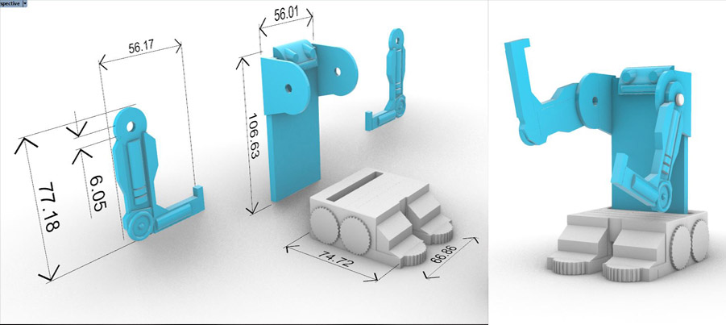
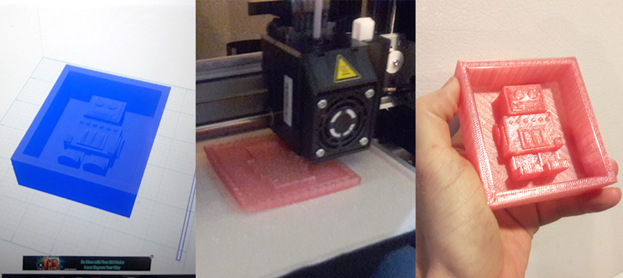
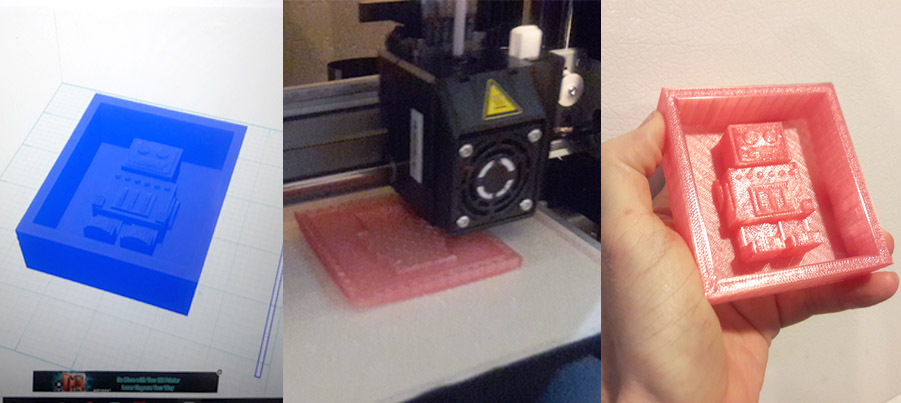

A7: Final Project Proposal

Concept
- The design intention for my final project is to produce a product that is a combination of novelty and utility
- I have a fondness for retro robots and like to decorate my home and work office with robots as novelty items
- I called my project the Carry-it 2000 Robot
- I started my project by gathering inspiration and drafting concept sketches
- For utility, the robot of my creation will hold items I use daily such as post-it notes, business cards, sharpies etc.
- From the sketches I created a cardboard proof of concept. Spatically it appeared to fit together nicely
- In Rhino I made adjustable so as to move the carried object into a more desired or visible position for ease of interaction.
 

Breakdown of tasks
- CAD design: The robot parts including the torso, head, arms, and feet (base) are all modeled in Rhino. I wanted to be more creative and less mechanical with this project and I felt Rhino was the best CAD program for this project.
- PGrasshopper: I wanted some of the parts of the Carry-it 2000 to look like tires or gears. Tire tread/gear teeth is hard to model in Rhino, so I turned to Grasshopper to create the desired parametric pattern. In Grasshopper I created repeating parametric pattern of tread/gear teeth on a circle, then extruded the shape and imported it into Rhino.
- d printing: Parts of the Carry-it 2000 will be printed on a Da Vinchi Mini W+ 3d printer. Files will be exported from Rhino as .stl files and imported into XYZ printing, which is the print print software for the Da Vinchi.
- Moving parts: For the design I wanted the arms to move for novelty while providing the ability to hold various objects in different positions.
- Casting: I intend to cast the base of the robot in plaster. I chose plaster because the added weight will reduce the chances of the robot tipping over. Also, the base will require a large amount of filament to produce, so for future replication of this part it made sense to use casting when creating multiple instances as opposed to repeated 3d printing.
- Finishing: I intend spray paint the parts upon completion for better presentation, fit and finish.


Timeline with contingency plans
- The following is contingent upon approval of my concept on Wednesday, 5/29
- 5/31: Print the body of the Carry-it 2000 and mold for the base
- 06/1: Create silicone mold for Base using Smooth-on. Cast base into solidified Smooth-on mold
- 06/2: Spray paint final parts, make final assembly. Create 1st draft of web page assignment
- 06/3: Proofread 1st draft of web page and make corrections
- 06/5: Turn in final assignment web page
Bill of materials
- Cast plaster: $10.59 per per 2lb bag. For this project, my calculations reveal that I will only need 1 bag but have a backup as a contingency if re-casts are needed. Both bags are in my possession as of 5/27
- PLA filament: $18.99 per spool. My calculations reveal I will only need one spool but have a backup as a contingency. Both spools are in my possession as of 5/27
- Smooth-on silicone mold: $27.85 trial unit. My calculations reveal I the remaining Smooth-on trial unit I have will easily create my remaining mold. Smooth-on is in trial unit is in my posession as of 5/27
Source files
- Rhino robot file
- Download source file
Peer-attribution
- Special thanks to @Dawn Ferguson, for sharing her example of a project proposal in class!